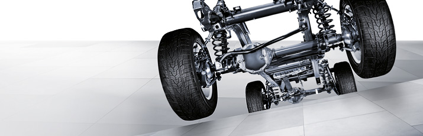

| Clasa G Suspensii Transmisii Galerie foto |  |
| |

Suspensie
Clasa G face fata oricarui tip de teren datorita combinatiei dintre amortizoarele de soc sofisticate, arcurile helicoidale si pozitia exacta a puntilor rigide. Spre deosebire de suspensiile independente conventionale, atunci când o roata a autovehiculului din Clasa G trece peste un obstacol precum o piatra de mari dimensiuni, carcasa puntii se ridica automat împreuna cu aceasta.
Clasa G se poate deplasa pe pante cu o înclinatie de pâna la 80%, îsi pastreaza stabilitatea pe pante transversale de pâna la 54% si poate rula pe suprafete inundate cu o adâncime de maxim 0,5 metri.
Stabilitatea Clasei G este asigurata de manevrabilitatea optima bazata pe îmbinarea armonioasa între sasiu, transmisie, trenul de rulare si suspensia rotii. Un nivel ridicat de siguranta si stabilitate este furnizat de Programul Electronic de Stabilitate (ESP®) si sistemul de asistare a frânarii (BAS). Clasa G este singurul model de autovehicul la nivel mondial care include în dotarea standard sistemul electronic de control al tractiunii (4ETS), precum si trei diferentiale complet blocabile.